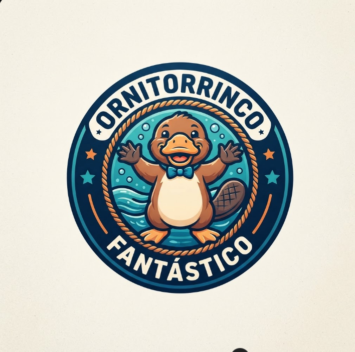

<<!DOCTYPE html>
<html lang="pt-br">
<head>
<meta charset="UTF-8">
<title>Ornitorrinco</title>

<style>

body {
    margin: 0;
    font-family: Arial;
    background: #f2f6f5;
}

header {
    height: 180px;
    display: flex;
    align-items: center;
    background: white;
    padding: 15px 30px;
    gap: 30px;
}

.logo {
    width: 150px;
}

.logo img {
    width: 120px;
}

.video {
    flex: 1;
    height: 150px;
}

.video video {
    width: 100%;
    height: 100%;
    object-fit: cover;
    border-radius: 12px;
}

main {
    display: flex;
    gap: 25px;
    padding: 30px;
}

.menu {
    width: 250px;
}

button {
    width: 100%;
    padding: 15px;
    margin-bottom: 12px;
    border: 0;
    border-radius: 8px;
    background: #d7e8e3;
    cursor: pointer;
    font-size: 16px;
}

button:hover {
    background: #bcd8d1;
}

.conteudo {
    flex: 1;
    background: white;
    padding: 30px;
    border-radius: 12px;
    min-height: 400px;
}

</style>
</head>

<body>

<header>

    <div class="logo">
        
    </div>

    <div class="video">
        <video autoplay muted loop>
            <source src="video.mp4" type="video/mp4">
        </video>
    </div>

</header>

<main>

    <div class="menu">

        <button onclick="mostrar('sobre')">
            O que é um ornitorrinco?
        </button>

        <button onclick="mostrar('caracteristicas')">
            Características
        </button>

        <button onclick="mostrar('alimentacao')">
            Alimentação
        </button>

        <button onclick="mostrar('habitat')">
            Habitat
        </button>

        <button onclick="mostrar('curiosidades')">
            Curiosidades
        </button>

    </div>

    <div class="conteudo" id="conteudo">

        <h1>Ornitorrinco</h1>

        <p>
            Clique em um dos tópicos ao lado para conhecer
            mais sobre o ornitorrinco.
        </p>

    </div>

</main>

<script>

function mostrar(tipo) {

    let texto = "";

    if (tipo == "sobre") {
        texto = `
        <h1>O que é um ornitorrinco?</h1>
        <p>
        O ornitorrinco é um mamífero semiaquático encontrado
        principalmente na Austrália.
        </p>`;
    }

    if (tipo == "caracteristicas") {
        texto = `
        <h1>Características</h1>
        <p>
        Possui bico semelhante ao de um pato, patas adaptadas
        para a natação, cauda larga e corpo coberto por pelos.
        </p>
        <p>
        É um dos poucos mamíferos que põem ovos.
        </p>`;
    }

    if (tipo == "alimentacao") {
        texto = `
        <h1>Alimentação</h1>
        <p>
        Alimenta-se principalmente de pequenos animais aquáticos,
        vermes, larvas e crustáceos.
        </p>`;
    }

    if (tipo == "habitat") {
        texto = `
        <h1>Habitat</h1>
        <p>
        Vive principalmente em rios, córregos e áreas de água doce
        da Austrália.
        </p>`;
    }

    if (tipo == "curiosidades") {
        texto = `
        <h1>Curiosidades</h1>
        <p>
        O ornitorrinco é um animal muito diferente, pois possui
        características encontradas em diferentes grupos de animais.
        </p>
        <p>
        Os machos possuem uma estrutura venenosa nas patas traseiras.
        </p>`;
    }

    document.getElementById("conteudo").innerHTML = texto;
}

</script>

</body>
</html>